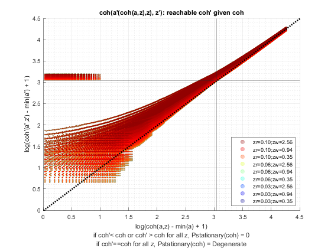
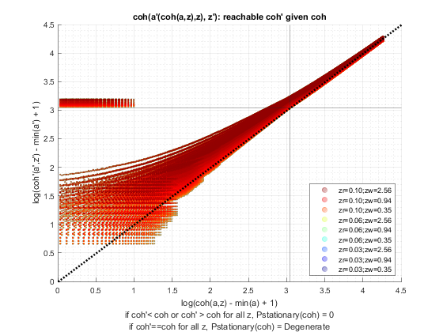

Derive Distributions for Save + Borrow One Asset (Wrapper)
back to Fan's Dynamic Assets Repository Table of Content.
Contents
function [result_map] = ff_abz_ds_wrapper(varargin)
FF_ABZ_DS_WRAPPER finds the stationary asset distributions
This is a warpper function.
Default
- it_subset = 5 is basic invoke quick test
- it_subset = 6 is invoke full test
- it_subset = 7 is profiling invoke
- it_subset = 8 is matlab publish
- it_subset = 9 is invoke operational (only final stats) and coh graph
it_param_set = 8; bl_input_override = true; [param_map, support_map] = ffs_abz_set_default_param(it_param_set); % Note: param_map and support_map can be adjusted here or outside to override defaults % param_map('it_a_n') = 750; % param_map('it_z_n') = 15; % param_map('fl_r_save') = 0.025; % param_map('fl_r_borr') = 0.025; % param_map('st_analytical_stationary_type') = 'loop'; % param_map('st_analytical_stationary_type') = 'vector'; param_map('st_analytical_stationary_type') = 'eigenvector'; % get armt and func map [armt_map, func_map] = ffs_abz_get_funcgrid(param_map, support_map, bl_input_override); % 1 for override default_params = {param_map support_map armt_map func_map};
Parse Parameters 1
% if varargin only has param_map and support_map, params_len = length(varargin); [default_params{1:params_len}] = varargin{:}; param_map = [param_map; default_params{1}]; support_map = [support_map; default_params{2}]; if params_len >= 1 && params_len <= 2 % If override param_map, re-generate armt and func if they are not % provided bl_input_override = true; [armt_map, func_map] = ffs_abz_get_funcgrid(param_map, support_map, bl_input_override); else % Override all armt_map = [armt_map; default_params{3}]; func_map = [func_map; default_params{4}]; end % if profile, profile DP + Dist here support_map('bl_profile_dist') = false; % append function name st_func_name = 'ff_abz_ds_wrapper'; support_map('st_profile_name_main') = [st_func_name support_map('st_profile_name_main')]; support_map('st_mat_name_main') = [st_func_name support_map('st_mat_name_main')]; support_map('st_img_name_main') = [st_func_name support_map('st_img_name_main')];
Parse Parameters
% param_map params_group = values(param_map, {'st_analytical_stationary_type'}); [st_analytical_stationary_type] = params_group{:}; % support_map params_group = values(support_map, ... {'st_profile_path', 'st_profile_prefix', 'st_profile_name_main', 'st_profile_suffix','bl_time'}); [st_profile_path, st_profile_prefix, st_profile_name_main, st_profile_suffix, bl_time] = params_group{:};
Start Profiler and Timer
Start Profile
if (it_param_set == 7) close all; profile off; profile on; end % Start Timer if (bl_time) tic; end
Solve DP
bl_input_override = true; result_map = ff_abz_vf_vecsv(param_map, support_map, armt_map, func_map);
Elapsed time is 1.829957 seconds. Warning: Using only the real component of complex data. Warning: Using only the real component of complex data. Warning: Using only the real component of complex data. Warning: Using only the real component of complex data. Warning: Using only the real component of complex data. Warning: Using only the real component of complex data. Warning: Using only the real component of complex data. Warning: Using only the real component of complex data. Warning: Using only the real component of complex data. Warning: Using only the real component of complex data. Warning: Using only the real component of complex data. Warning: Using only the real component of complex data. Warning: Using only the real component of complex data. Warning: Using only the real component of complex data. Warning: Using only the real component of complex data.
 
 Derive Distribution
if (strcmp(st_analytical_stationary_type, 'loop')) result_map = ff_az_ds(param_map, support_map, armt_map, func_map, result_map, bl_input_override); elseif (strcmp(st_analytical_stationary_type, 'vector')) result_map = ff_az_ds_vec(param_map, support_map, armt_map, func_map, result_map, bl_input_override); elseif (strcmp(st_analytical_stationary_type, 'eigenvector')) result_map = ff_az_ds_vecsv(param_map, support_map, armt_map, func_map, result_map, bl_input_override); end
Elapsed time is 0.283559 seconds.
----------------------------------------
xxxxxxxxxxxxxxxxxxxxxxxxxxxxxxxxxxxxxxxx
Summary Statistics for: cl_mt_pol_a
xxxxxxxxxxxxxxxxxxxxxxxxxxxxxxxxxxxxxxxx
----------------------------------------
fl_choice_mean
-2.3776
fl_choice_sd
5.1302
fl_choice_coefofvar
-2.1578
fl_choice_prob_zero
0.0799
fl_choice_prob_below_zero
0.5846
fl_choice_prob_above_zero
0.3355
fl_choice_prob_max
-1.8101e-35
tb_prob_drv
percentiles cl_mt_pol_aPercentileValues fracOfSumHeldBelowThisPercentile
___________ ___________________________ ________________________________
0.1 -20 0.14303
1 -20 0.14303
5 -15.047 0.37784
10 -10.374 0.64356
15 -7.1028 0.82373
20 -4.7664 0.94631
25 -3.1776 1.0287
35 -1.4019 1.1196
50 -0.28037 1.1691
65 0 1.1728
75 0.37383 1.1632
80 0.56075 1.1557
85 0.93458 1.1373
90 1.4953 1.1124
95 2.3364 1.0757
99 4.486 1.0228
99.9 7.1963 1.0033
----------------------------------------
xxxxxxxxxxxxxxxxxxxxxxxxxxxxxxxxxxxxxxxx
Summary Statistics for: cl_mt_pol_coh
xxxxxxxxxxxxxxxxxxxxxxxxxxxxxxxxxxxxxxxx
----------------------------------------
fl_choice_mean
-1.3522
fl_choice_sd
5.6982
fl_choice_coefofvar
-4.2140
fl_choice_prob_zero
0
fl_choice_prob_below_zero
0.3941
fl_choice_prob_above_zero
0.6059
fl_choice_prob_max
-1.8101e-35
tb_prob_drv
percentiles cl_mt_pol_cohPercentileValues fracOfSumHeldBelowThisPercentile
___________ _____________________________ ________________________________
0.1 -21.217 0.028073
1 -20.691 0.18192
5 -15.326 0.67939
10 -10.209 1.1433
15 -6.6645 1.4511
20 -4.1127 1.6477
25 -2.3826 1.7645
35 -0.44308 1.8598
50 0.74085 1.8329
65 1.3622 1.7158
75 1.8001 1.598
80 2.1405 1.527
85 2.5261 1.4425
90 3.1187 1.3391
95 4.1546 1.2057
99 6.4926 1.0577
99.9 9.4637 1.0078
----------------------------------------
xxxxxxxxxxxxxxxxxxxxxxxxxxxxxxxxxxxxxxxx
Summary Statistics for: cl_mt_pol_c
xxxxxxxxxxxxxxxxxxxxxxxxxxxxxxxxxxxxxxxx
----------------------------------------
fl_choice_mean
1.3781
fl_choice_sd
0.3095
fl_choice_coefofvar
0.2246
fl_choice_prob_zero
0
fl_choice_prob_below_zero
0
fl_choice_prob_above_zero
1.0000
fl_choice_prob_max
-1.8101e-35
tb_prob_drv
percentiles cl_mt_pol_cPercentileValues fracOfSumHeldBelowThisPercentile
___________ ___________________________ ________________________________
0.1 0.02 0.00024661
1 0.02 0.00024661
5 1.0927 0.027078
10 1.1158 0.066293
15 1.1371 0.10715
20 1.1507 0.14864
25 1.1748 0.19161
35 1.2286 0.27782
50 1.3605 0.41833
65 1.4897 0.57276
75 1.5404 0.6826
80 1.6002 0.73957
85 1.6554 0.79932
90 1.7581 0.86085
95 1.8889 0.92594
99 2.1491 0.98345
99.9 2.4716 0.99827
xxx All Variables PERCENTILES AND STATS xxx
tb_outcomes_meansdperc: mean, sd, percentiles
mean sd coefofvar min max pYis0 pYls0 pYgr0 pYisMINY pYisMAXY p0_1 p1 p5 p10 p15 p20 p25 p35 p50 p65 p75 p80 p85 p90 p95 p99 p99_9
_______ _______ _________ _______ ______ _______ _______ _______ __________ ___________ _______ _______ _______ _______ _______ _______ _______ ________ ________ ______ _______ _______ _______ ______ ______ ______ ______
cl_mt_pol_a -2.3776 5.1302 -2.1578 -20 49.533 0.07992 0.58459 0.33549 0.017003 -1.8101e-35 -20 -20 -15.047 -10.374 -7.1028 -4.7664 -3.1776 -1.4019 -0.28037 0 0.37383 0.56075 0.93458 1.4953 2.3364 4.486 7.1963
cl_mt_pol_coh -1.3522 5.6982 -4.214 -21.455 54.536 0 0.39409 0.60591 8.2532e-05 -1.8101e-35 -21.217 -20.691 -15.326 -10.209 -6.6645 -4.1127 -2.3826 -0.44308 0.74085 1.3622 1.8001 2.1405 2.5261 3.1187 4.1546 6.4926 9.4637
cl_mt_pol_c 1.3781 0.30951 0.22458 0.02 5.0031 0 0 1 0.016994 -1.8101e-35 0.02 0.02 1.0927 1.1158 1.1371 1.1507 1.1748 1.2286 1.3605 1.4897 1.5404 1.6002 1.6554 1.7581 1.8889 2.1491 2.4716
xxx All Variables Fraction of Y Held up to Percentile xxx
tb_outcomes_fracheld: fraction of asset/income/etc held by hh up to this percentile
fracByP0_1 fracByP1 fracByP5 fracByP10 fracByP15 fracByP20 fracByP25 fracByP35 fracByP50 fracByP65 fracByP75 fracByP80 fracByP85 fracByP90 fracByP95 fracByP99 fracByP99_9
__________ __________ ________ _________ _________ _________ _________ _________ _________ _________ _________ _________ _________ _________ _________ _________ ___________
cl_mt_pol_a 0.14303 0.14303 0.37784 0.64356 0.82373 0.94631 1.0287 1.1196 1.1691 1.1728 1.1632 1.1557 1.1373 1.1124 1.0757 1.0228 1.0033
cl_mt_pol_coh 0.028073 0.18192 0.67939 1.1433 1.4511 1.6477 1.7645 1.8598 1.8329 1.7158 1.598 1.527 1.4425 1.3391 1.2057 1.0577 1.0078
cl_mt_pol_c 0.00024661 0.00024661 0.027078 0.066293 0.10715 0.14864 0.19161 0.27782 0.41833 0.57276 0.6826 0.73957 0.79932 0.86085 0.92594 0.98345 0.99827
End Profiler and Timer
End Timer
if (bl_time) toc; end % End Profile if (it_param_set == 7) profile off profile viewer st_file_name = [st_profile_prefix st_profile_name_main st_profile_suffix]; profsave(profile('info'), strcat(st_profile_path, st_file_name)); end
Elapsed time is 0.604778 seconds.
end
ans =
Map with properties:
Count: 12
KeyType: char
ValueType: any